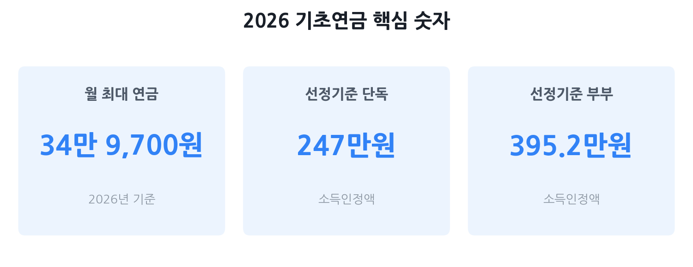

기초연금 2026 완벽 가이드
— 자격·금액·감액 기준 총정리
2026년 기초연금 기준연금액은 월 최대 34만 9,700원으로 올랐습니다. 하지만 "재산이 있으면 못 받는다", "국민연금 받으면 다 깎인다"는 오해가 많아, 실제로 받을 수 있는데 신청조차 안 하는 분이 적지 않습니다. 이 글에서는 자격 자가진단, 소득인정액 계산법, 감액 함정, 신청 방법까지 2026년 최신 기준으로 정리했습니다.
- 만 65세 전후로 기초연금을 처음 알아보는 본인 또는 자녀
- "재산이 있으면 기초연금을 못 받는다"고 막연히 생각해 왔던 분
- 국민연금을 오래 냈는데 기초연금이 얼마나 깎이는지 궁금한 분
- 부부가 함께 신청했을 때 금액이 어떻게 달라지는지 확인하고 싶은 분

기초연금이란 — 2026년 기준연금액
기초연금은 만 65세 이상 어르신 중 소득·재산이 일정 기준 이하인 분에게 국가가 매달 현금을 드리는 제도입니다. 국민연금처럼 보험료를 낸 적이 없어도 받을 수 있으며, 65세 이상 노인 인구의 약 70%가 수급 대상이 될 수 있도록 기준을 설계하고 있습니다.
2026년 기준연금액(월 최대 수령액)은 34만 9,700원입니다. 이는 2025년 34만 2,510원에서 소비자물가상승률(2.1%)을 반영해 7,190원 인상된 금액으로, 보건복지부가 2026년 1월 고시한 수치입니다.
나는 받을 수 있나? — 선정기준액 자가진단
기초연금을 받으려면 두 가지 조건을 동시에 충족해야 합니다.
- 나이 요건: 신청일 기준 만 65세 이상
- 소득인정액 요건: 소득인정액이 선정기준액 이하
2026년 선정기준액은 아래와 같습니다.
| 가구 유형 | 2026년 선정기준액 (월 소득인정액 기준) |
전년 대비 |
|---|---|---|
| 단독가구 | 247만 원 이하 | +19만 원 (2025년 228만 원) |
| 부부가구 | 395만 2,000원 이하 | +30만 4,000원 (2025년 364만 8,000원) |
단독가구 기준으로 월 소득인정액이 247만 원 이하이면 기초연금 수급 대상입니다. 월 근로소득·연금소득·사업소득이 그 이상이더라도, 소득인정액을 계산하는 방식이 단순 합산이 아니라 각종 공제와 환산이 적용되므로 직접 계산해 보거나 복지로 모의계산기를 활용하는 것이 정확합니다.
소득인정액 계산법 — 재산도 소득으로 본다?
기초연금 수급 여부를 결정하는 소득인정액은 단순히 통장에 들어오는 돈이 아니라, 재산까지 소득으로 환산해 더한 값입니다. 공식은 다음과 같습니다.
① 월 소득평가액 — 실제로 버는 돈
근로소득·사업소득·공적연금(국민연금 등)·금융소득 등을 합산하되, 근로소득에는 공제가 적용됩니다.
- 근로소득 공제: 월 116만 원(2026년 기준, 2025년 112만 원에서 상향) 우선 공제 후 나머지의 30% 추가 공제
- 예시: 월 200만 원 근로소득 → (200만 원 − 116만 원) × 70% = 58만 8,000원만 소득으로 반영
- 국민연금·공무원연금 등 공적연금 소득은 전액 반영(별도 공제 없음)
② 재산의 월 소득환산액 — 부동산·금융자산을 소득으로 환산
보유 재산에서 기본재산액(지역별)과 금융재산 기본공제를 빼고 부채를 차감한 뒤, 연 4%의 환산율로 월 소득으로 변환합니다.
| 구분 | 내용 |
|---|---|
| 계산 공식 | [(일반재산 − 기본재산액) + (금융재산 − 2,000만 원) − 부채] × 연 4% ÷ 12개월 |
| 기본재산액 (지역별 공제) |
대도시 1억 3,500만 원 / 중소도시 8,500만 원 / 농어촌 7,250만 원 |
| 금융재산 공제 | 2,000만 원까지는 소득 환산 제외 |
| 부채 차감 | 주택담보대출 등 확인된 부채는 재산에서 차감 |
계산이 복잡하게 느껴진다면 복지로(bokjiro.go.kr) 모의계산기를 이용하면 됩니다. 주소·재산·소득을 입력하면 소득인정액과 예상 기초연금액을 바로 확인할 수 있습니다.
감액 함정 2가지 — 국민연금 연계·부부 20%
선정기준액 이하여서 수급 대상이 되더라도, 두 가지 경우에 기준연금액 34만 9,700원보다 적게 받을 수 있습니다. 미리 알지 못하면 손해라고 느낄 수 있는 구조입니다.
함정 ①: 국민연금 연계 감액
국민연금을 오래, 많이 낸 분은 기초연금이 일부 감액됩니다. 감액 기준은 국민연금의 소득재분배급여(A급여)를 기준으로 하며, 2026년 기준으로는 다음과 같습니다.
| 구분 | 2026년 기준 | 비고 |
|---|---|---|
| 감액 시작 기준 (A급여) | 26만 2,270원 초과 시 | 국민연금공단에서 A급여액 조회 가능 |
| 감액 시작 기준 (수령액) | 52만 4,550원 초과 시 | A급여 기준이 우선 |
| 감액 산식 | 기준연금액 × 250% − 국민연금 급여액 | 복잡한 경우 복지로 계산기 활용 |
| 최소 보장액 | 기준연금액의 50% 이상 보장 | 2026년 기준 약 17만 4,850원 이상 |
함정 ②: 부부 동시 수급 시 20% 감액
부부가 모두 기초연금을 수급하면 각자의 기초연금액에서 20%를 감액해 지급합니다. 2026년 기준으로 1인당 최대 수령액은 다음과 같습니다.
- 단독 수급: 월 최대 34만 9,700원
- 부부 동시 수급 (1인당): 월 최대 27만 9,760원 (= 34만 9,700원 × 80%)
- 부부 합산: 월 최대 55만 9,520원
신청 방법 — 주민센터·복지로·국민연금공단
기초연금은 자동으로 지급되지 않습니다. 자격이 된다고 해도 반드시 신청해야 받을 수 있으며, 신청일 기준 해당 월부터 지급됩니다. 신청 가능 시점은 만 65세 생일이 속한 달의 1개월 전부터입니다.
신청 장소 3가지
- 전국 읍·면·동 주민센터 — 주소지 관할 없이 어느 주민센터에서든 신청 가능
- 국민연금공단 지사 — 전국 지사에서 직접 방문 신청 가능
- 복지로(bokjiro.go.kr) 온라인 신청 — 공동인증서 또는 간편인증 로그인 후 비대면 신청
필요 서류
- 신분증(주민등록증, 운전면허증 등)
- 본인 명의 통장 사본
- 금융정보 등 제공 동의서 (방문 시 현장 작성)
- 전·월세 계약서 등 임차 관련 서류 (해당 시)
소득·재산 정보는 원칙적으로 시스템으로 조회되므로 별도 증빙 없이 진행되는 경우가 많습니다. 처리 기간은 신청일로부터 약 30일입니다. 만 65세 도달 2개월 전부터 우편, 카카오톡 등으로 신청 안내를 받을 수 있습니다.
노후 지원 연계 — 함께 챙길 제도들
기초연금 외에도 만 65세 이상 어르신을 위한 주요 지원 제도들이 있습니다. 기초연금을 신청할 때 함께 확인해 두면 놓치는 혜택을 줄일 수 있습니다.
- 노인장기요양보험: 거동이 불편한 어르신에게 요양원·방문요양 등 서비스를 지원합니다. 국민건강보험공단에 신청하면 등급 판정 후 급여를 받을 수 있습니다. 기초연금 수급자와 별도로 운영됩니다.
- 노인일자리 및 사회활동 지원사업: 공익활동·사회서비스형·시장형 등 다양한 형태로 만 65세(일부 60세) 이상 어르신에게 월급을 드리는 사업입니다. 읍·면·동 주민센터 또는 노인복지관에 신청하며, 기초연금 수급 여부와 무관하게 참여 가능합니다.
- 의료급여·건강보험료 경감: 기초연금 수급자 중 저소득층은 건강보험료 경감 혜택을 받을 수 있습니다. 국민건강보험공단 지사에 문의하세요.
- 주거급여 등 기초생활수급: 소득이 매우 낮다면 기초연금 외에 기초생활보장 급여(주거·의료·생계)를 중복으로 받을 수도 있습니다. 복지로 통합 신청을 통해 가능한 급여를 모두 확인하세요.
자주 묻는 질문
Q. 아파트가 있어도 기초연금을 받을 수 있나요?
네, 가능합니다. 기초연금은 '소득인정액'이 선정기준액 이하이면 받을 수 있는데, 소득인정액은 재산 전액이 아니라 지역별 기본재산액(대도시 1억 3,500만 원 등)을 공제하고 남은 금액에 연 4% 환산율을 적용한 뒤 12로 나눈 월 금액으로 계산됩니다. 집 한 채가 있더라도 다른 소득이 적다면 수급 대상이 될 수 있습니다. 복지로(bokjiro.go.kr) 모의계산기로 먼저 확인해 보세요.
Q. 국민연금을 받으면 기초연금이 깎이나요?
경우에 따라 감액될 수 있습니다. 국민연금 소득재분배급여(A급여)가 26만 2,270원(2026년 기준)을 넘으면 연계 감액이 적용됩니다. 그러나 아무리 감액되어도 기준연금액의 최소 50%(약 17만 4,850원)는 반드시 보장됩니다. 국민연금공단 홈페이지에서 본인의 A급여액을 조회할 수 있습니다.
Q. 부부가 둘 다 기초연금을 받으면 금액이 줄어드나요?
네, 현재는 부부 모두 수급 시 각자 20%를 감액해 지급합니다. 2026년 기준 1인당 최대 27만 9,760원(= 34만 9,700원 × 80%)이 됩니다. 정부는 이 부부 감액 제도를 2027년부터 저소득층을 시작으로 단계적 폐지를 추진 중입니다.
Q. 언제부터 신청할 수 있나요?
만 65세 생일이 속한 달의 1개월 전부터 신청할 수 있습니다. 예를 들어 8월생이라면 7월부터 신청 가능합니다. 수급 자격을 충족해도 신청해야만 지급되므로, 만 65세가 가까워지면 미리 신청하는 것이 좋습니다. 전국 읍·면·동 주민센터, 국민연금공단 지사, 복지로(bokjiro.go.kr) 온라인 신청 모두 가능합니다.
Q. 자녀 명의로 재산을 옮기면 기초연금을 더 받을 수 있나요?
주의가 필요합니다. 재산을 무상으로 이전(증여)하면 최대 5년치 소득으로 환산해 소득인정액에 반영할 수 있습니다. 단순히 명의를 이전한다고 소득인정액이 낮아지지 않으며, 오히려 증여세 문제가 생길 수 있어 전문가 상담을 권장합니다.
본 글은 보건복지부 보도자료(2026년 1월), 복지로(bokjiro.go.kr), 국민연금공단 온에어(npsonair.kr), 정책브리핑(korea.kr) 등 공개 자료를 바탕으로 2026년 6월 7일 기준 작성됐습니다. 소득인정액 세부 계산(근로소득 공제액 116만 원, 기본재산액, 환산율 등)은 보건복지부 고시 및 지자체 기준에 따라 달라질 수 있습니다. 감액 관련 수치(A급여 기준액 26만 2,270원 등)는 국민연금공단 발표 기준이나, 개인 상황에 따른 정확한 금액은 반드시 복지로 모의계산기 또는 주민센터·국민연금공단 방문 상담으로 확인하세요. 본 페이지는 정보 제공 목적이며 수급을 보장하지 않습니다.